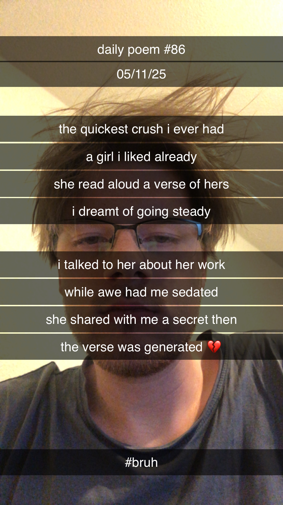

The Quickest Crush I Ever Had
[86]The quickest crush I ever had –
A girl I liked already;
She read aloud a verse of hers,
I dreamt of going steady.
I talked to her about her work
While awe had me sedated –
She shared with me a secret then:
The verse was generated 💔
